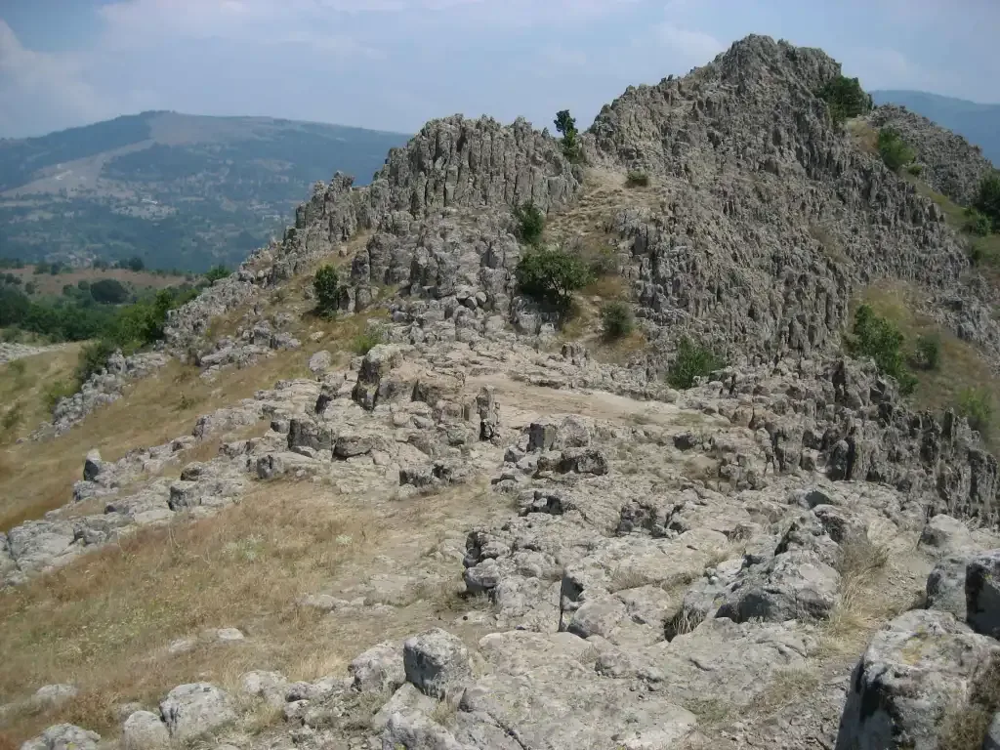

Ориентација
Локалитетот и неговите маркери
Кокино не е еден споменик, туку низа зарамнети камени платформи и всечени нишани. Научете го распоредот пред искачувањето и ридот престанува да изгледа како куп камења.
Распоредот
Четири платформи, од запад кон исток
Археоастрономскиот локалитет „Татиќев камен“ се состои од неколку вештачки, во стени всечени зарамнети површини. Две се користеле за обреди, две за набљудување.
Пониската, западна платформа
Обредна · камените тронови
Платформа А ги носи всечените камени седишта — „троновите“ — свртени кон исток. Се наоѓа околу 19 метри под Платформа Б. При изгрејсонце во одредени денови од годината, светлината што минува низ обредниот маркер паѓа прво на едно седиште.
Повисоката, источна платформа
Обредна · всечената траншеа
Горната обредна површина. По нејзиниот западен раб во карпата е вештачки исечена траншеа; сончевите зраци го допираат нејзиниот десен раб во деновите кога обредниот маркер функционира.
Западната астрономска платформа
Набљудување · околу 1900 г. пр. н. е.
Главната набљудувачка станица. Оттука седумте маркери ги определуваат изгревите на сонцето при долгоденицата и рамноденицата, како и крајните изгреви на полната месечина во лето и зима. Астрономските истражувања ја датираат нејзината изработка во втората половина на 19 в. пр. н. е.
Северната платформа
Набљудување · околу 2083 г. пр. н. е.
Всечена во северната падина и постара од двете набљудувачки платформи. Служела за пролетната и есенската рамноденица — и за позициите на ѕвездата Алдебаран во периодот помеѓу околу 2000 и 1500 г. пр. н. е., кога Алдебаран се наоѓал во точката на рамноденицата.
Источниот хоризонт
Седумте маркери
Гледани од Платформа В, седум засеци во карпата го означуваат местото каде сонцето и месечината го пробиваат хоризонтот во клучните денови од годината. Се читаат од север (лево) кон југ (десно), како што точките на изгревот се движат низ своите годишни и 19-годишни циклуси.
Сонцето изгрева точно на исток само во деновите на рамноденицата. Меѓу нив се поместува кон север и кон југ по хоризонтот, а маркерите за долгоденицата го фаќаат во двете крајности.
Посебен маркер, познат како обредниот маркер (К), се наоѓа веднаш под највисокиот дел на локалитетот. Тој е двоен маркер — и обреден и астрономски — и е опишан на страницата Обреди и митови.
-
1
Месечина при максимална деклинација, зима
Маркер за месечината во денот на максималното отстапување во зимскиот период. Добро зачуван.
-
2
Изгрев на летната долгоденица
Најсеверниот изгрев на сонцето во годината, околу 21 јуни.
-
3
Месечина при минимална деклинација, зима
Маркер за месечината во денот на минималното отстапување (деклинација) во зимскиот период. Добро зачуван.
-
4
Пролетна и есенска рамноденица
Точно на исток. Сонцето изгрева тука само во двата дена на рамноденицата, околу 21 март и 21 септември.
-
5
Месечина при минимална деклинација, лето
Маркер за месечината во денот на минималното отстапување во летниот период.
-
6
Изгрев на зимската краткоденица
Најјужниот изгрев на сонцето во годината, околу 21 декември.
-
7
Месечина при максимална деклинација, лето
Маркер за месечината во денот на максималното отстапување во летниот период.

Како да го поминете по вистински редослед
Од паркингот во подножјето, искачувањето до врвот трае околу петнаесет минути по блага падина осветлена од сонцето на југоисточната страна. Аудио водичот ги зема платформите по редослед што го прави локалитетот читлив: прво обредните јами, потоа Г, потоа А, потоа В.
Тоа не е редоследот по кој се граделе и не е кружна патека. Тоа е едноставно низата во која секоја платформа ја објаснува следната.